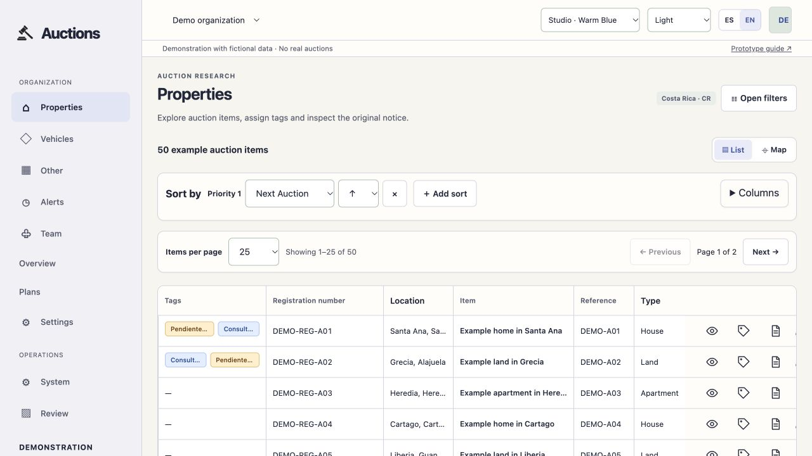
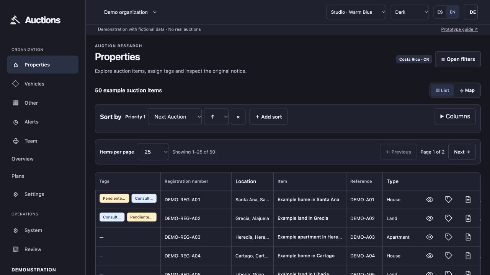
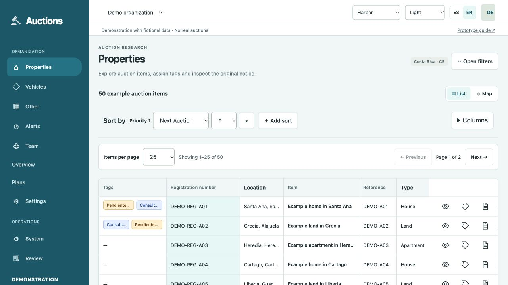
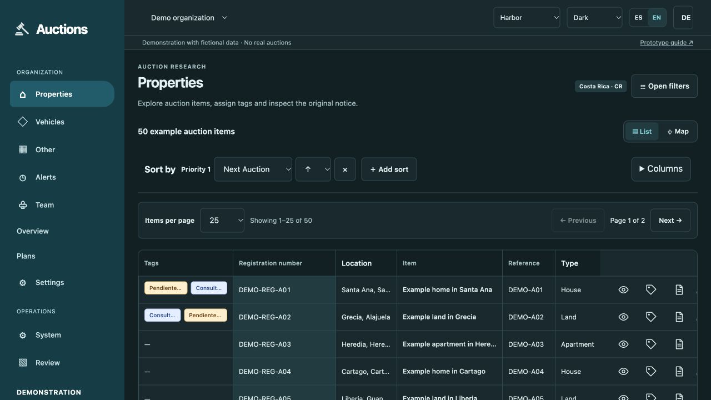
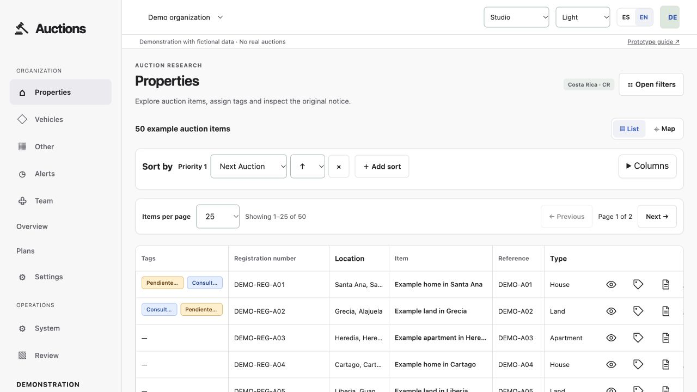
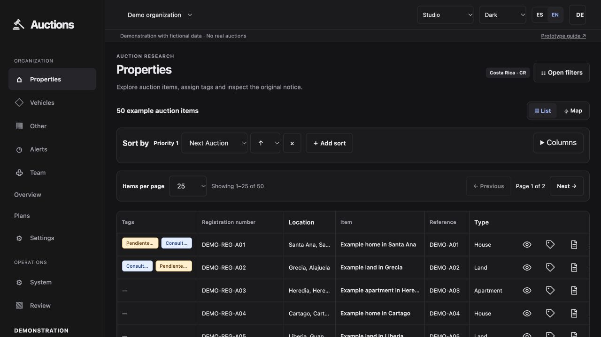

LightTry light →
Nine palettes, each with light and dark appearances. Open a combination, then use the header selectors to keep experimenting. System mode follows your device. Preferences are remembered in this browser.
These are proposed alternatives; no final palette has been selected. Semantic tag colors stay consistent. Item-list buttons are frameless.
Current refinement focus: the same Studio components and neutral navigation, with warm ivory surfaces and indigo accents. Compare directly with neutral Studio below.


Deep teal navigation, white data surfaces, pale aqua identifiers and coral primary actions. Inspired by the supplied dashboard reference.


Neutral navigation and surfaces, restrained blue accents, 48 px rows, tabular numbers and clearer alignment. This option changes visual density as well as color. All existing column, sorting and filter controls remain available.


Indigo-leaning blue with warm ivory light surfaces and a soft violet-tinted dark mode.
The supplied navy anchors navigation and the light-mode primary actions, with coordinated cool neutrals and a readable dark variant.